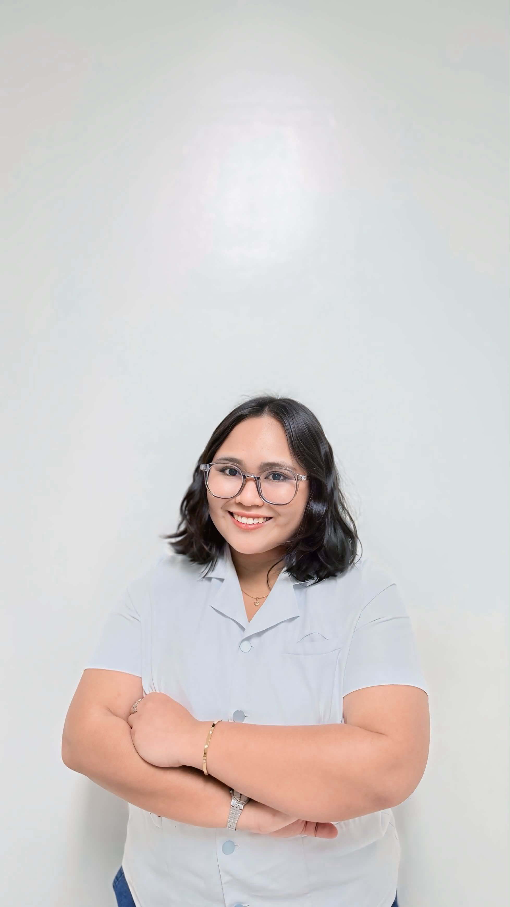

Little Pieces of My Life
The people, places, moments, and memories that made the journey worth remembering.



Student nurse. Leader. Dreamer. Daughter. Activist. Friend. And still figuring life out one day at a time.
Get to know me My journeyMore than the titles, positions, grades, and things written on paper.
I'm Maria Blesela Namata, but most people call me Bles or Ate Bles.
I'm currently navigating my final years of nursing school while trying to make sense of leadership, friendships, dreams, responsibilities, and life outside the classroom.
This website is a little archive of the person behind all those roles.
Because apparently one life wasn't enough.
From clinical duties and patient stories to discovering what it really means to care for people.
Student governance, organizations, projects, late-night meetings, and learning how to lead without losing myself.
Nursing first. Maybe law next. Maybe somewhere far away. Maybe something I haven't imagined yet.
The person who carries home, family, expectations, and the people who believed in me before I did.
Still learning. Still healing. Still making questionable decisions. Still growing.
Believing that education, healthcare, justice, and ordinary people speaking up can change things.
A little reminder I carry with me.
A few chapters of a life that is still being written.
The little girl who had big dreams and no idea how complicated growing up would become.
Organizations, student government, events, campaigns, projects, and learning that leadership is much more than a title.
Sleepless nights, clinical duties, patients, friendships, exams, and discovering why nursing became more than just a pre-med course.
RN. Maybe law school. Maybe somewhere abroad. Whatever comes next, I'll figure it out.
The people, places, moments, and memories that made the journey worth remembering.
